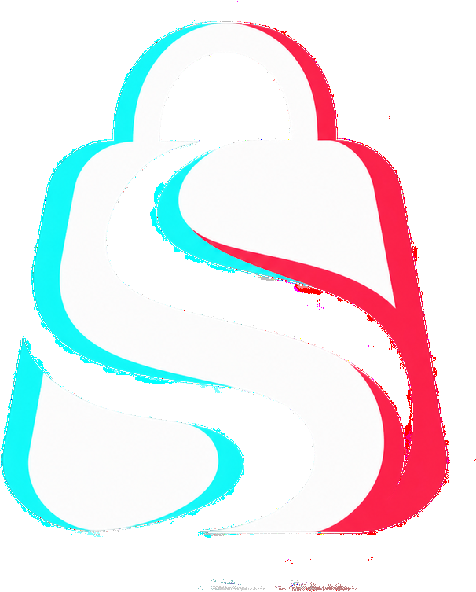

Método prático para afiliados
Mais clareza. Menos tentativa e erro. Comece pelo celular.
Aprenda um processo em 8 etapas para selecionar produtos, criar vídeos, publicar com consistência e analisar seus resultados como afiliado da TikTok Shop.
Quero conhecer o SHOPFLOWCurso rápido, 100% online e pensado para iniciantes. Não exige estoque próprio nem equipamentos profissionais.
MÉTODO SHOPFLOW™

8 módulos + e-book
+ manual operacional2–3h
de curso
+ manual operacional2–3h
de curso
O problema
Começar não deveria parecer tão complicado.
Quem entra na TikTok Shop encontra produtos demais, formatos de vídeo diferentes e métricas que parecem difíceis de entender. Sem um processo, é fácil travar, publicar sem direção e abandonar antes de aprender o que funciona.
?Qual produto escolher? O que gravar? Como saber o que melhorar?
A solução
Um método organizado para transformar aprendizado em ação.
O SHOPFLOW reúne seleção de produtos, hooks, oferta, produção, frequência, leitura de dados, otimização e escala em uma sequência simples para você aplicar usando o próprio celular.
Ver as 8 etapasO mecanismo
Oito movimentos. Um processo.
Do produto ao conteúdo. Do conteúdo aos dados. Dos dados à evolução.
S
Seleção
Encontre produtos com potencial de demonstração.
H
Hook
Prenda a atenção com clareza nos primeiros segundos.
O
Oferta
Apresente benefício, prova e ação sem pressionar.
P
Produção
Grave e edite vídeos usando o próprio celular.
F
Frequência
Crie uma rotina possível de manter.
L
Leitura
Interprete os sinais de cada publicação.
O
Otimização
Mude uma variável por vez e compare.
W
Workflow
Organize o suporte e uma escala responsável.
Por dentro do curso
Conteúdo direto ao ponto.
Uma formação rápida, com aproximadamente 2 a 3 horas, dividida em oito módulos e acompanhada de materiais de consulta.
01BASE
Começando no TikTok Shop
Modelo de afiliado, requisitos e preparação.
02S
Seleção de Produtos
Critérios para encontrar oportunidades testáveis.
03H
Hooks que Prendem
Aberturas que conquistam atenção sem enganar.
04O
Oferta que Conecta
Problema, benefício, prova e ação.
05P
Produção pelo Celular
Roteiro, gravação, edição e publicação.
06F
Frequência e Rotina
Uma agenda sustentável para produzir.
07L
Leitura dos Dados
Métricas, diagnóstico e registro.
08O + W
Otimização e Escala
Planos de 7 e 30 dias para evoluir.
Benefícios
O que torna o método diferente.
Uma formação enxuta, prática e construída para caber na sua rotina.
Para quem é indicado
Para quem quer construir uma nova habilidade digital.
- Iniciantes que desejam entender a TikTok Shop.
- Mães, pais e pessoas que buscam uma atividade flexível.
- Quem quer produzir conteúdo usando o próprio celular.
- Pessoas dispostas a testar, aprender e manter consistência.
100%online, acessível pelo celular e no seu ritmo.
Aplicação prática
O que você será capaz de organizar.
Esta primeira edição não utiliza depoimentos inventados. Os relatos serão adicionados somente após feedback real dos alunos.
Critérios claros para decidir onde concentrar seus esforços.
Hooks, roteiros e formatos que você consegue adaptar.
Leitura de dados para decidir o próximo teste com mais clareza.
✓
Compra protegidaAprenda com tranquilidade.
Pagamento processado em ambiente seguro pela Kiwify, acesso digital após a confirmação e suporte pelos canais informados na compra. A garantia seguirá as condições apresentadas no checkout.
Sobre a marca
A SHOPFLOW acredita em método, consistência e evolução.
O treinamento foi criado para organizar o caminho de quem deseja começar como afiliado, com uma comunicação clara, prática responsável e foco na construção de habilidades — sem promessas de dinheiro fácil.
ClarezaPráticaConsistênciaOtimização

Materiais complementares
Leve o método com você.
Além das videoaulas, você recebe o e-book completo e o manual operacional resumido para consultar durante seus testes, organizar sua rotina e revisar as etapas sempre que precisar.
E-book MÉTODO SHOPFLOW™
Manual operacional
Planos práticos de 7 e 30 dias
Oferta de lançamento
Comece hoje com o MÉTODO SHOPFLOW™.
Curso completo com 8 módulos
E-book completo em PDF
Manual operacional em PDF
Acesso online pelo celular
Planos práticos de 7 e 30 dias
Investimento
R$ 97
Pagamento único. Condições de parcelamento disponíveis no checkout.
Quero entrar no SHOPFLOWO link de pagamento será conectado ao checkout oficial da Kiwify.Acesso digital
Aprenda de onde estiver.
O MÉTODO SHOPFLOW™ é entregue online pela área de membros da Kiwify. Você pode acessar as aulas e os materiais pelo celular em qualquer região do Brasil, desde que tenha conexão com a internet.
BRAcesso online para alunos em todo o Brasil.
Dúvidas frequentes
Antes de começar.
Preciso ter estoque ou produto próprio?
Não. O curso ensina o modelo de afiliado, no qual você divulga produtos disponíveis na TikTok Shop e pode receber comissão pelas vendas atribuídas ao seu conteúdo.
Preciso aparecer nos vídeos?
Não obrigatoriamente. Existem formatos com demonstração das mãos, narração, texto e outras abordagens. O importante é produzir conteúdo claro, original e compatível com as políticas.
O curso garante que eu vou ganhar dinheiro?
Não. O curso oferece capacitação e um processo de trabalho. Resultados variam conforme conta, produtos, conteúdo, público, consistência, execução e regras da plataforma.
Consigo acompanhar pelo celular?
Sim. As aulas e os materiais foram estruturados para uma experiência prática pelo celular.
O curso é oficial da TikTok?
Não. O MÉTODO SHOPFLOW™ é um produto educacional independente e não possui vínculo, certificação ou parceria oficial com a TikTok.
As regras podem mudar?
Sim. Plataformas digitais podem alterar requisitos e políticas. O aluno deve confirmar as regras vigentes dentro do aplicativo e nos canais oficiais da TikTok Shop.
Última chamada
Não deixe sua ideia parada por falta de direção.
Comece com um processo claro, avance no seu ritmo e transforme o celular em uma ferramenta de aprendizado e produção. O valor e as condições desta oferta podem ser atualizados futuramente.
Quero começar no MÉTODO SHOPFLOW™